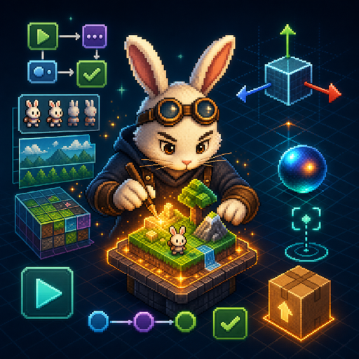
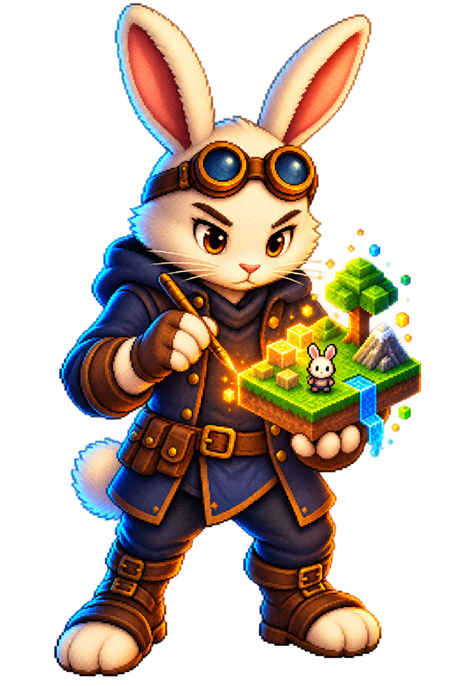

Shape the scene
Arrange entities, components, assets, and cameras in visual 2D, 3D, or mixed workspaces.
Beta release planned Visual game editor for Apple platforms
Build 2D, 3D, and mixed games visually in a native macOS workspace. Test the loop in Play Preview, then export a structured Xcode project for release work.
Built from the Moonwhisk Vale tutorial pack
This homepage preview uses the bundled tutorial artwork to stage the SwiftUI workspace and the game loop side by side. Switch the screen to see the same project move from authoring to Play Preview.
Bundled tutorial assets
AUTHORING VIEW
Build the lesson inside the workspace.The scene hierarchy, inspector, and guided steps frame the same Moonwhisk Vale artwork used by the tutorial pack.
One creative loop
ForgeKit keeps the creative loop visible. The editor owns the world-building work; Xcode remains the final release boundary.
Arrange entities, components, assets, and cameras in visual 2D, 3D, or mixed workspaces.
Use behavior-driven Play Preview to check the loop while the idea is still easy to reshape.
Export a structured Xcode project for signing, archiving, distribution, and platform release work.
A workshop, not a black box
SPRITEKIT / 2D
Compose sprite-driven scenes with a visual canvas and camera-aware preview.Events, conditions, and actions keep gameplay flow inspectable and editable.
Move from editing to a running preview without losing the scene you were shaping.
Use assisted workflows when they help. ForgeKit keeps editor assistance separate from exported game runtime code.
ForgeKit prepares the project handoff. Signing, archive, and distribution remain visible in Xcode.

FROM THE APP ICONMeet Worldsmith
Part engineer, part maker, Worldsmith turns small systems into playable worlds. The goggles, stylus, and glowing voxel scene reflect a curious, precise, hands-on way of building games.

Beta release planned
A ForgeKit beta release is planned. Until it is ready, follow development on GitHub and preview the direction here.